Verdetto AND-style: un FAIL hard (firma, fiction, party) boccia. S14 hook · S15 dominanza · S16 moto = le dimensioni nuove.
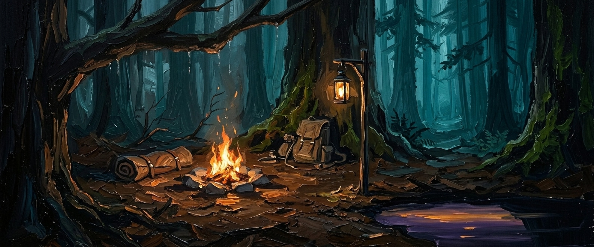
bivacco PASS| S1-S13 | tutti ✓ — flagship, plate fuoco, impasto |
| S14 hook | fuoco+tripode = signature |
| S15 dom | teal+ambra |
| S16 moto | quiete giusta |
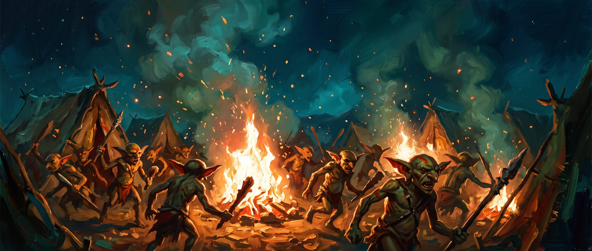
assalto-goblin PASS| S1-S13 | ✓ (embers dipinte = tollerata, tuo veto) |
| S14 hook | falò+melee |
| S15 dom | teal fuoco |
| S16 moto | mischia caotica |
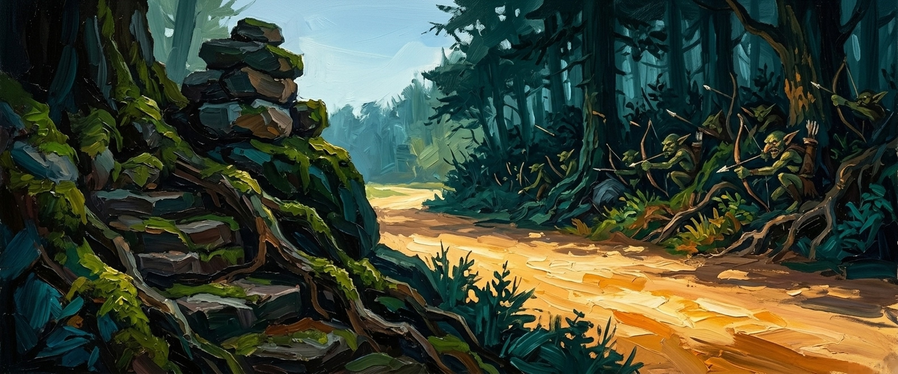
agguato-foresta PASS| S1-S13 | ✓ sagome camuffate nel fogliame |
| S14 hook | goblin nascosti = il segreto È il hook |
| S15 dom | Veronese+teal |
| S16 moto | reveal region wired |
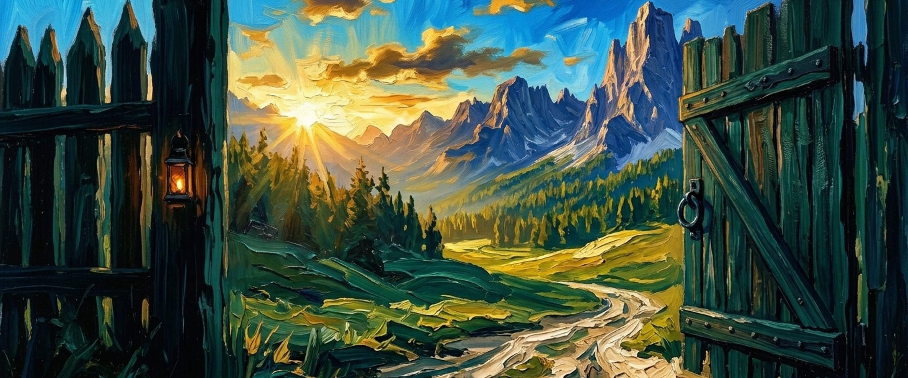
viaggio-andata PASS forte| S1-S13 | ✓ cancello aperto su valle, Solar Triumph esatto |
| S14 hook | il cancello = portal-signature |
| S15 dom | ambra solare+Veronese |
| S16 moto | statica giusta — partenza |
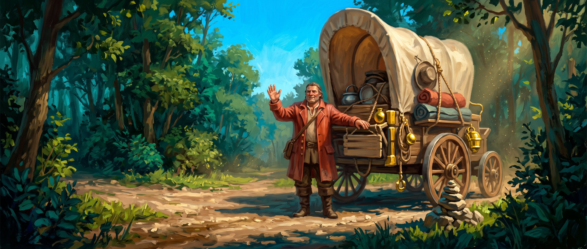
mercante-strada PASS| S1-S13 | ✓ carro+mercante sulla strada |
| S14 hook | carro come soggetto — ok ma non eccezionale |
| S15 dom | ocra-ambra su teal |
| S16 moto | statica |
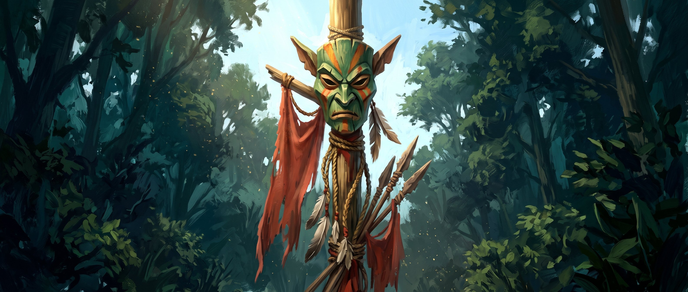
totem-goblin PASS| S1-S13 | ✓ totem+piume+lanterna |
| S14 hook | totem = signature fortissimo |
| S15 dom | verdi+rosso cinabro banner |
| S16 moto | MONOLITH centrale |
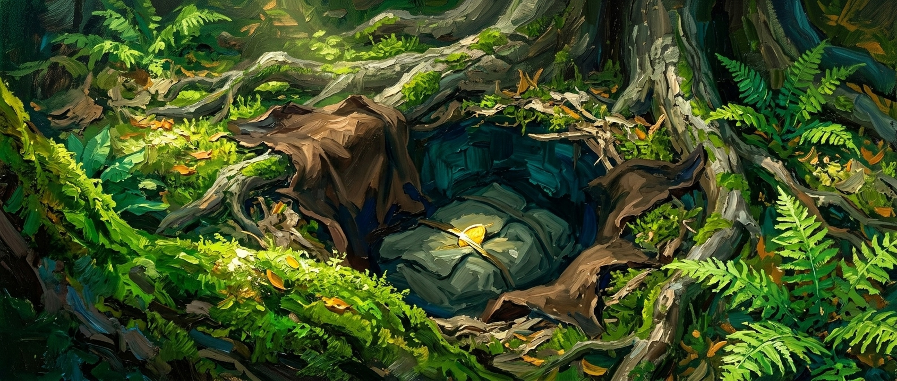
bottino (v7) PASS| S1-S13 | ✓ buca+barlume, zero firma/cornice |
| S14 hook | barlume d'oro nella bocca = il tell |
| S15 dom | litter ocra ancora dominante ma accento teal |
| S16 moto | beat calmo |
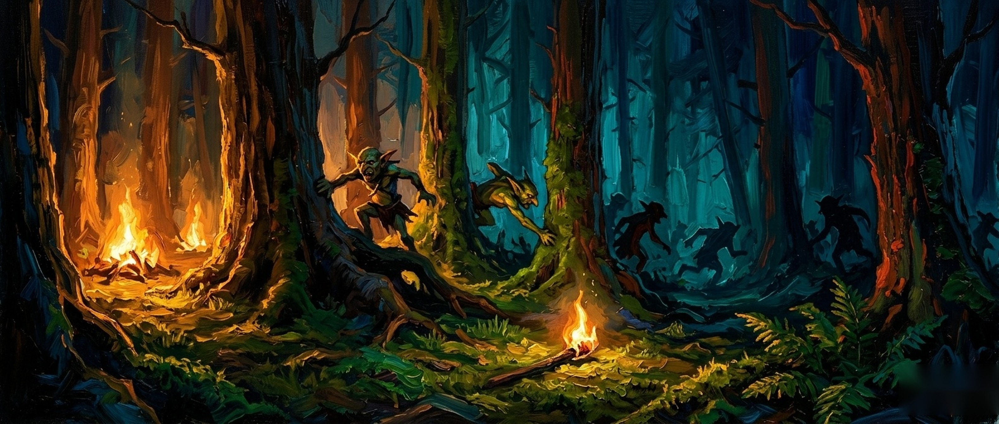
incalzare (v5) PASS| S1-S13 | ✓ rotta caotica, zero firma |
| S14 hook | torcia caduta = panic-object |
| S15 dom | metà dx ancora scura — teal-saturo ma buio |
| S16 moto | caos direzionale giusto |
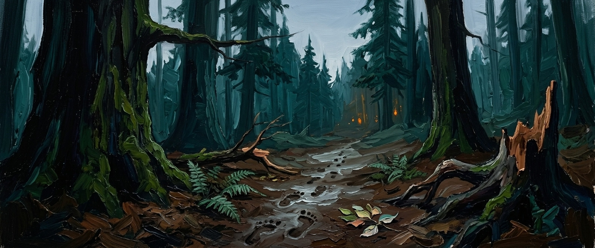
sentiero-tracce BORDERLINE| S1-S13 | ✓ impronte→fuochi lontani = fiction esatta |
| S14 hook | impronte c'è ma è modesta — le luci lontane fanno il lavoro |
| S15 dom | sentiero bagnato = marrone-mud nel centro-avanti |
| S16 moto | statico |
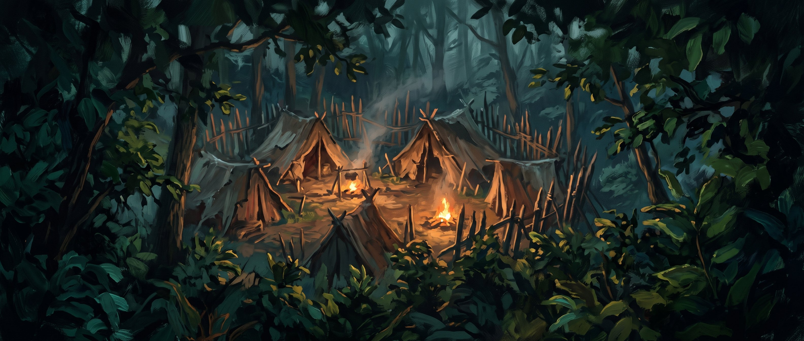
accampamento-raider BORDERLINE| S1-S13 | ✓ campo+tende+fuochi |
| S14 hook | il campo intero = vista, niente signature unica |
| S15 dom | terra/tende ocra-bruno |
| S16 moto | statico giusto |
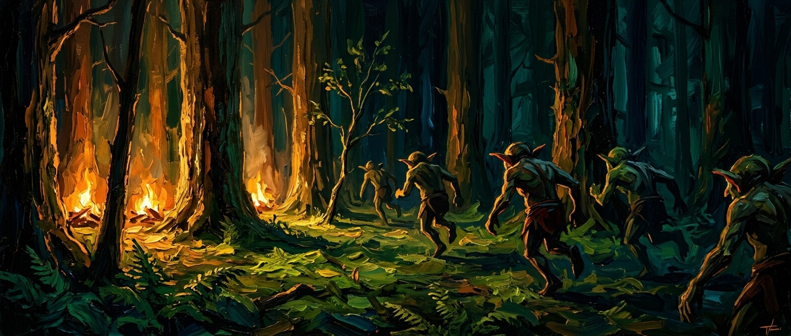
saccheggio (edit) BORDERLINE| S1-S13 | ✓ campanelli tolti, forziere+braci |
| S14 hook | forziere+monete = hook ok ma affollato |
| S15 dom | teal+ambra braci |
| S16 moto | statico |
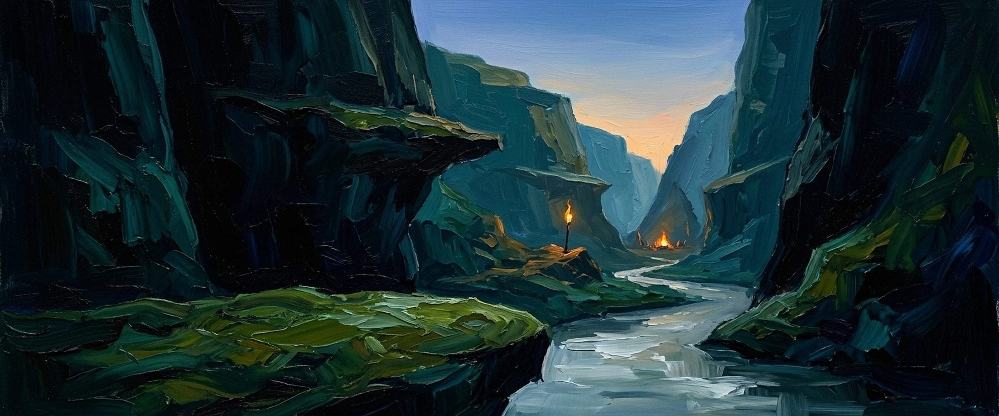
gola-raider (wired) BORDERLINE vs gola2| S1-S13 | ✓ coulisse collaudata |
| S14 hook | passaggi+gola = struttura non hook |
| S15 dom | Veronese+teal |
| S16 moto | statico |
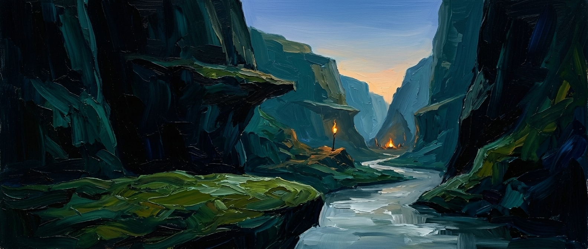
gola2 candidato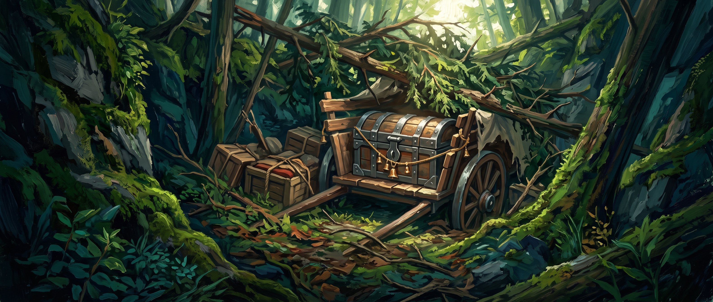
carro-nascosto PASS stock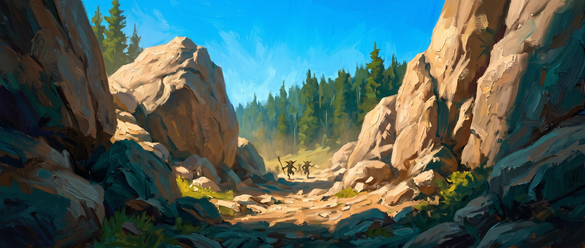
fuga-goblin PASS stock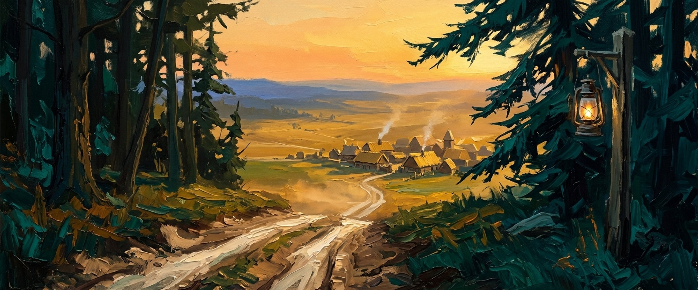
viaggio-ritorno PASS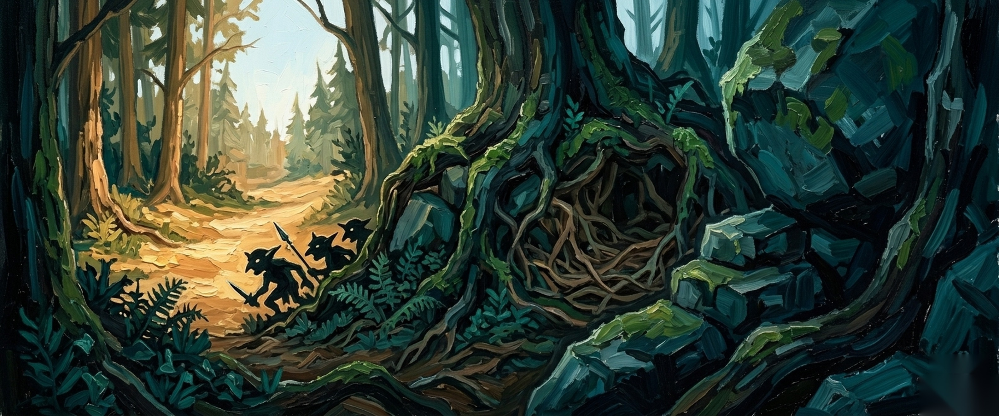
intrusi PASS| Esito | Immagini |
|---|---|
| PASS | bivacco, assalto-goblin, agguato-foresta, viaggio-andata, mercante-strada, totem-goblin, bottino, incalzare, carro-nascosto, fuga-goblin, viaggio-ritorno, intrusi (12) |
| BORDERLINE | sentiero-tracce (S15 mud dominante), accampamento-raider (S14 hook debole), saccheggio (S14), gola-raider (pairwise) (4) |
| FAIL | nessuno — il pipeline corretto ha sanato firme/fiction/cornici |